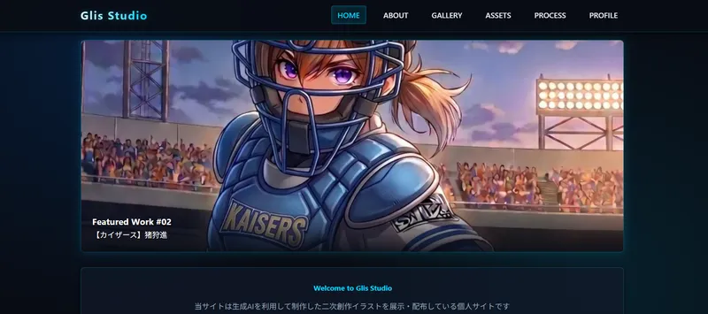
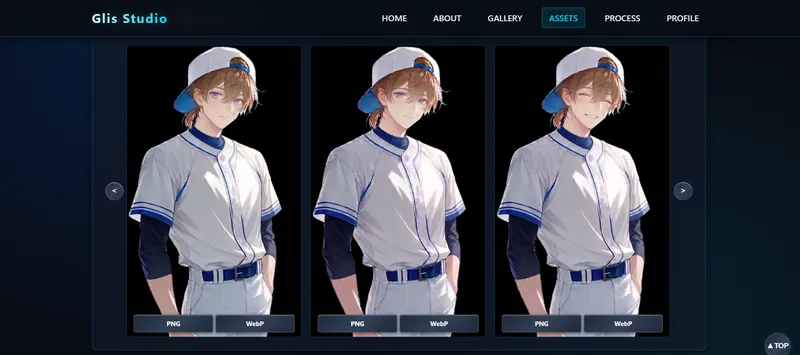

コードが書けなくても理想のWebサイトは作れる！AIを活用したサイト制作のコツとテクニック
「理想のサイトのイメージはあるけれど、自分でコードを書く技術がない…」と諦めていませんか？
そんな方におすすめしたいのが、「AIにコードを出力してもらう」という方法です。

スライドギャラリーを設置したトップページ

画像の上にDLボタンを配置した素材配布ページ
こちらの画像は、私が実際に公開している個人サイトのスクリーンショットです。洗練されたおしゃれなデザインのサイトですが、実は9割以上をAIに作ってもらいました。
この記事では、このサイトを実際にどのように制作したのか、そして「理想通りのサイトをAIに作ってもらうためのちょっとしたコツ」をご紹介します！
AIにWebサイトのコードを書いてもらう際、一番大切なのは「具体的なイメージを伝えること」です。細かく希望を伝えるほど、理想通りのページが一瞬で完成します。
以下は、私がAI（Gemini）に提出した実際の指示文（プロンプト）です。
💬 実際に使用したプロンプト
Webサイトを制作し、コードを出力してください。Webサイトのイメージやデザインについての希望は以下の通りです。
【サイトの目的】
AI生成による二次創作イラストの展示、および画像素材の配布
【サイト名/管理人名】
Glis Studio / okojo
【全体的なデザインのイメージ】
「AIらしさ」をイメージした、近未来的でシャープな雰囲気。カラーリングは黒・青を多めに使用してください。ボタンやアイコンなどにメタリックな効果を入れてください。レスポンシブ対応にしてください。
【構成/レイアウトの希望】
※以下、キャラ配置イメージや詳細な利用規約、管理人のプロフィール項目などを記述
【その他の希望】
上記の要望に対して「実現が難しい点」「デザイン面でおすすめできない点」「画像展示のより良い工夫」などがあれば、ぜひアドバイスや指摘も教えてください。
AIはテキストだけでなく視覚的な指示も認識してくれるため、テキストでレイアウトを図形のように表現したり、手書きのラフ画像を添付したりしても理解してくれます。
ベースを作った後は、気になるところを対話形式で修正していきます。実際に私が追加で行ったやり取りをご紹介します。
『「HOME」タブに更新履歴を追加してください。また、「TERMS OF USE（利用規約）」は「ABOUT」タブ内に統合し、現在のABOUT文章の下に移動させてください』
実際に出来上がった画面を見ると、「あ、これも必要だった」「文章量が少ないから1ページにまとめよう」という点が見えてきます。後からの変更も一言伝えるだけでOKです。
『ヒーローセクションのスライドギャラリーで、縦長画像を表示する際に「中央」ではなく「やや上寄り（キャラクターの顔が映りやすい位置）」を表示するように調整できますか？』
最初は画像の中央がトリミングされてキャラクターの顔が切れてしまっていたのですが、このように伝えることでCSSをスマートに修正してくれました。
『素材配布用のダウンロードボタンを「PNG用」「WebP用」の2つ並べたいです。現在のボタン横にもう一つ追加するための差し替え用コードを教えてください』
一部だけ変更したい時も、該当箇所のコードだけを出力してもらえるので修正がラクラクです。
『「GALLERY」内の画像をカテゴリ分けしたいです。「1つのタブ内で切り替える」のと「新しくタブを増やす」のでは、デザイン的にどちらがおすすめですか？』
『ネタバレやセンシティブな画像を「ALL」一覧には表示せず、該当カテゴリを選んだ時だけ表示させる構造は可能ですか？』
デザインに迷った時や、「こんな技術的に難しそうなことできるのかな？」と思うような仕様も、とりあえずAIに相談してみるのがおすすめです。メリット・デメリットを踏まえた最適な提案をしてくれます。
「こんなに長いプロンプトを書くのは大変そう…」と思った方もご安心ください。ここまで細かく指示しなくても、AIはおしゃれなWebページを作ってくれます。
たとえば、当サイトで配布しているテンプレート「KICK BACK」は、以下のようなシンプルな指示から生まれました。
💬 シンプルなプロンプト例
「KICK BACK」という楽曲をイメージしたWebページのHTML/CSS/JavaScriptコードを作成してください。
【デザインの方向性】
【技術的条件】
これだけの指示でも、雰囲気をしっかり汲み取ったクオリティの高いページを出力してくれます！
Webサイトのデザインだけでなく、サイト制作にまつわる「面倒な裏方作業」もAIに助けてもらっています。
特に重宝しているのが、画像処理用の「Python（パイソン）スクリプト」の作成です。
私が日々のサイト更新で頻繁に使っているのは、以下の2つの自動処理スクリプトです。
どちらも元のファイルを上書きしないよう「出力用フォルダ」に別保存される仕組みになっています。
使い方も超簡単で、画像の入ったフォルダを「バッチファイルのアイコン」にドラッグ＆ドロップするだけ！ これだけでフォルダ内の画像が一括処理されます。
サイト内に大量にある「サムネイル画像」や「ギャラリー用画像」を一瞬で最適なサイズや軽さに加工できるため、作業時間が大幅に短縮できました。
知識ゼロでも大丈夫！💡
実は私自身、プログラミングの知識はほぼゼロです。専門知識がなくても、AIに「こういう処理をするスクリプトと、簡単に動かせるバッチファイルを作って！」と頼むだけで、強力な便利ツールが手に入ります。
「難しそう…」と感じる方は無理に試す必要はありませんが、作業を少しでも効率化したい方はぜひ挑戦してみてください！
ハードルが高く思えるWebサイト制作ですが、AI技術を活用すれば驚くほど手軽に、そして楽しく形にすることができます。
同じプロンプトを使っても、使用するAI（GeminiやChatGPTなど）によってデザインの個性が変わるのも面白いところです。ぜひあなたに合った「相棒AI」を見つけて、理想の個人サイトを作ってみてくださいね！